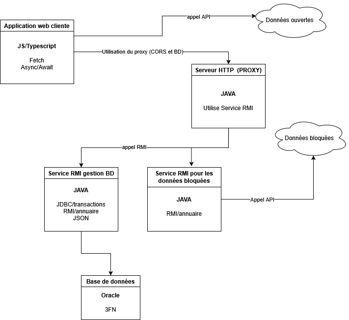

Compte rendu — Application Répartie (SAÉ S4-02)
1. Introduction
Cette application répartie agrège et visualise des informations hétérogènes sur la métropole de Nancy : stations VéloStan, restaurants et incidents de circulation. Elle fait coopérer plusieurs composants distribués — une interface web, un proxy HTTP, des services RMI et une base de données Oracle — afin de contourner proprement les restrictions de sécurité du navigateur tout en gérant la robustesse réseau.
2. Architecture
L'application repose sur une architecture distribuée en trois couches : un client web, un proxy HTTP servant de passerelle, et des services RMI donnant accès aux données.

- Client web (TypeScript / Leaflet) : s'exécute dans le navigateur, affiche une carte interactive centrée sur Nancy et dialogue en asynchrone (Fetch API) avec les API publiques et notre proxy.
-
Proxy HTTP (Java
HttpServer) : reçoit les requêtes du client web sur le port 8080, route selon l'URL (/api/bd,/api/data) et délègue aux services distants via RMI. - Services RMI : un service base de données (Oracle via JDBC) et un service incidents (client HTTP serveur-à-serveur vers l'API Waze). Chaque service s'enregistre auprès du proxy via le registre RMI.
3. Réalisation technique par module
3.1. Frontend et données ouvertes
L'interface est écrite en TypeScript et packagée avec esbuild. Elle est organisée en
modules (couche http, map, ui, types,
config). Les stations VéloStan sont récupérées via l'API GBFS de Cyclocity
(informations statiques + statut temps réel) puis fusionnées pour afficher, sur chaque
marqueur, l'adresse, le nombre de vélos disponibles, les places libres et la capacité.
Les marqueurs sont colorés selon la disponibilité (rouge : aucun vélo, orange : ≤ 3,
vert : > 3) et une liste latérale synchronisée permet de recentrer la carte.
3.2. Proxy HTTP et contournement CORS
L'API d'incidents de circulation du Grand Nancy n'expose pas l'en-tête
Access-Control-Allow-Origin, ce qui bloque tout appel fetch
direct depuis le navigateur (erreur CORS). Pour contourner ce blocage, un proxy Java
(com.sun.net.httpserver.HttpServer) reçoit les requêtes du client et
déclenche les appels RMI correspondants : le ProxyHandler lit l'URI,
route /api/bd vers le service restaurants et /api/data vers le
service incidents, puis renvoie la réponse au format JSON (avec gestion d'un code 400
pour un endpoint invalide).
3.3. Services RMI (base de données et incidents)
Base de données : base Oracle hébergée sur Charlemagne, structurée en
trois tables (Restaurant, TableRestaurant,
Reservation). La connexion JDBC utilise une classe Database en
Singleton avec transactions manuelles (setAutoCommit(false)). Le service
expose deux opérations distantes : récupérer les coordonnées des restaurants (réponse
JSON) et réserver une table (nom, prénom, nombre de convives, téléphone).
Incidents : le ServiceIncidents utilise le
HttpClient de Java pour interroger l'API Waze, configuré pour passer par le
proxy de l'IUT (www-cache:3128), avec gestion du code HTTP et des erreurs
réseau (timeout, IOException, interruption).
4. Déploiement et exécution
Opérations prévues pour un environnement Linux (machines de l'IUT).
Base de données
Renseigner les identifiants Oracle dans src/main/java/database_service.Credentials.java, puis
exécuter database.sql pour créer le schéma et le jeu d'essai.
Services backend (Java / Maven)
Maven gère les dépendances (org.json, ojdbc11) et la compilation
via mvn clean compile.
Frontend
Dans le dossier frontend : npm install puis
npm run build. Héberger le résultat sur le serveur webetu.
5. Analyse éthique et sécurité
Le contournement de la politique CORS via un proxy backend est-il responsable ? Les règles CORS protègent l'utilisateur final (contre le vol de session ou des actions à son insu), pas l'API distante. Passer par un service Java serveur-à-serveur — un schéma de type Backend For Frontend — est une pratique courante pour agréger des API tierces non prévues pour un appel direct depuis le navigateur. La responsabilité se déplace alors vers la sécurisation du proxy.
6. Conclusion
À compléter : bilan de ce qui a fonctionné, difficultés rencontrées (gestion des adresses réseau sans les coder en dur, configuration sur les machines de l'IUT, version de Java différente sur Charlemagne) et apports du projet en architecture répartie.